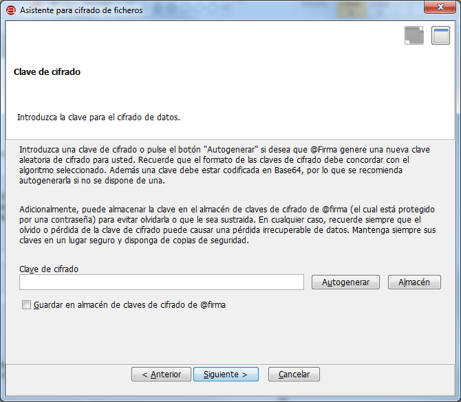

Desde la ventana de "Cifrado" podemos acceder a las funcionalidades el cifrado simétrico de datos. Mediante estas funciones podemos
cifrar documentos para uso personal que no queremos que nadie vea o documentos sensibles que debemos enviar a otra persona. Sólo
alguien con la clave/contraseña utilizada para el cifrado podrá descifrar este documento y acceder a su contenido. La operación
de descifrado de datos se realiza desde la ventana de "Descifrado".

Las opciones de configuración de esta pantalla son:
- Fichero a cifrar digitalmente:
- Permite seleccionar el fichero que se desea cifrar. Es posible pulsar el botón "Examinar" para buscar un fichero en disco o escribir
directamente su ruta en la caja de texto asociada.
- Tecla de acceso rápido: t
- Tecla de acceso rápido al botón Examinar: e
- Mecanismo de cifrado:
- Permite establecer si se desea utilizar una contraseña para el cifrado o una clave de cifrado, específica o autogenerada, para
el algoritmo de cifrado seleccionado.
- Tecla de acceso rápido: a
- Algoritmo de cifrado electrónico:
- Es el algoritmo que se utilizará para el cifrado de datos. La lista de algoritmos varía según el mecanismo de cifrado escogido y
la vista activa en la interfaz. Los algoritmos disponibles son:
- Para el cifrado por contraseña (pre-establecido en la vista simple):
- SHA1 y 3DES (pre-establecido en la vista simple).
- SHA1 y RC2.
- MD5 y DES
- Para el cifrado mediante clave:
- AES
- Alleged RC4
- Blowfish
- DES
- 3DES
- RC2
- Tecla de acceso rápido: g
En la vista simple de la interfaz, el mecanismo de cifrado es obligatoriamente "Contraseña de cifrado" y el algoritmo es siempre
"Contraseña SHA1 y 3DES".
Al pulsar el icono de ayuda se muestra la ventana de ayuda para el menú "Cifrado".
- Tecla de acceso rápido para el botón de Ayuda: h
Al pulsar en el botón "Cifrar" nos aparecerá un asistente para ayudarnos a configurar el proceso de cifrado.
- Tecla de acceso rápido para el botón "Cifrar": r

Al pulsar el botón "Siguiente >" accederemos a las pantallas de configuración del asistente, que variará según el mecanismo
de cifrado elegido.
En la primera pantalla del asistente para el cifrado con contraseña se nos pedirá introducir dos veces la contraseña que
deseamos utilizar para el cifrado. Las dos contraseñas introducidas deben ser la misma, respetando minúsculas y mayúsculas, y
no deben contener caracteres no ASCII como vocales acentuadas, la letra 'ñ' o caracteres extraños.

Las opciones que aparecen en esta pantalla son:
- Introduzca la contraseña:
- En esta caja de texto debe introducir la contraseña que desee utilizar para el cifrado de datos, respetando las
condiciones ya explicadas.
- Tecla de acceso rápido: i
- Introduzca de nuevo la contraseña:
- En esta caja de texto debe volver a introducir la contraseña de cifrado. Si no coincide con la primera contraseña,
se le informará al pulsar el botón "Siguiente >".
- Tecla de acceso rápido: n
Al pulsar el botón "Siguiente >" se ejecutará el proceso de cifrado. En caso de finalizar el proceso correctamente le
aparecerá un diálogo para el guardado del fichero con los datos cifrado. En caso de error le aparecerá el mensaje de error
correspondiente.
En la primera pantalla del asistente para el cifrado con clave se nos pedirá la clave que deseamos utilizar para el cifrado.
Esta clave debe respetar un formato concreto para cada algoritmo de cifrado y debe introducirse en Base64. La alternativa,
mucho más recomendable, a introducir la clave, es generar una clave válida aleatoria.

Las opciones de configuración que aparecen en esta pantalla son:
- Clave de cifrado:
- En esta caja de texto podemos introducir la clave en base 64.
- Tecla de acceso rápido: v
- Autogenerar:
- Mediante este botón generaremos una clave aleatoria válida para el algoritmo de cifrado seleccionado, ahorrándonos
introducir una manualmente.
- Tecla de acceso rápido: u
- Almacén:
- Permite acceder al almacén de claves (para lo que deberemos conocer su contraseña) y recuperar una de las claves almacenadas.
- Tecla de acceso rápido: l
- Guardar en almacén de claves de cifrado de @firma.
- Si marcamos esta casilla la clave de cifrado introducida, ya se haya introducido manualmente o autogenerado, se almacenará
en el almacén de claves del Cliente @firma. Para saber más del almacén de claves del Cliente @firma consulte el apartado
"Almacén de claves de cifrado".
- Tecla de acceso rápido: g
Al pulsar el botón "Siguiente >" se ejecutará el proceso de cifrado. En caso de error, se mostrará el mensaje pertinente y,
en caso de finalizar la operación correctamente, se solicitará mediante un diálogo dónde desea guardarse el fichero cifrado. Si se
marcó la casilla para almacenar la clave en el almacén se almacenará una vez finalizado el proceso.
El almacén de claves de cifrado del Cliente @firma es compartido por el Cliente y la Interfaz de Escritorio. Las características
del mismo son:
- No es necesario tener instalado el Cliente @firma.
- Está protegido por una contraseña que deberá establecer el usuario la primera vez que se almacene en él una clave.

- Cada vez que se almacene una clave, se nos pedirá un alias con el que identificarla.

- Los alias de las claves se almacenarán siempre en minúsculas.
- Se almacena en el directorio del usuario con el nombre "ciphkeys.jceks"
- No se elimina aunque se desinstale el Cliente @firma o la Interfaz de Escritorio.
Tenga en cuenta que si el usuario elimina este almacén manualmente, se perderán todas las claves de cifrado que tuviese almacenadas.
Teclas de acceso rápido para los botones:
- Maximizar ventana: m
- Anterior: a
- Siguiente: s
- Cancelar: c
- Finalizar: f